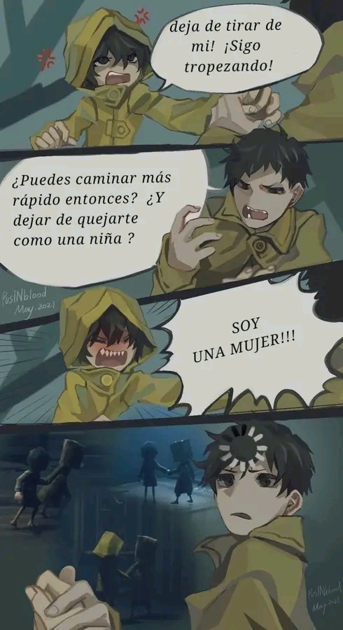
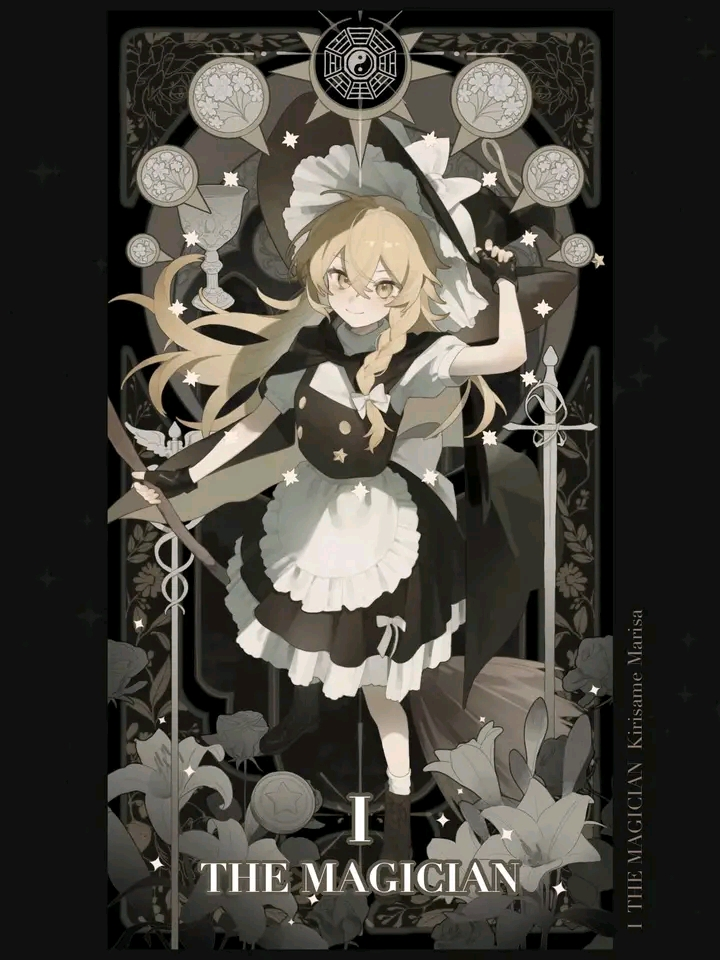

Blogs de la Comunidad
Explorando el Arte Digital
Descubre cómo las herramientas digitales están transformando el mundo del arte.
Inspiración desde la Naturaleza
Un vistazo a cómo los artistas encuentran inspiración en los paisajes naturales.
El Futuro de la Ilustración
Cómo la tecnología está dando forma a nuevas formas de ilustración y diseño.

Retratos Realistas
Aprende los secretos para crear retratos realistas con detalles impresionantes.